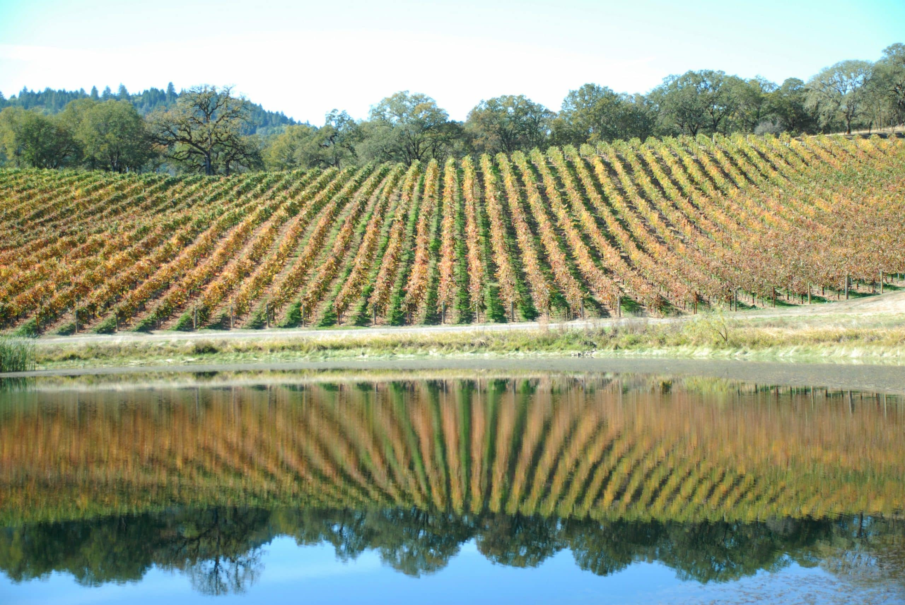

Crush it here
Receive, document, destem, crush, and press fruit at a facility built to keep harvest moving.
Inside the cellarUkiah, California
Bring the fruit, the protocol, or simply the ambition. Yokayo provides the people, equipment, and cellar capacity to carry wine from harvest to its next chapter.
Production services
Yokayo works with programs from very small to very large—from fruit receiving through finished wine.
Receive, document, destem, crush, and press fruit at a facility built to keep harvest moving.
Use Yokayo's comprehensive program or bring proprietary protocols for the team to execute.
Source across estate vineyards and grower partners in California and Oregon.
Add volume, rescue a backed-up crush pad, or hold wine without investing in more tanks.
Purpose-built in Ukiah
Fast receiving. Flexible lots. Scientific and sensory analysis on site. Enough range to keep a small label precise and a large program moving.
High-throughput processing with control over pressing needs.
Two presses · harvest throughputRed and white fermentation sizes, cooling jackets, insulated options, and a multi-size breakdown system.
Right-size every lotA laboratory and blending room support scientific and sensory analysis.
Faster blending decisionsA drive-into and drive-out scale keeps receiving, shipping, and transfer efficient.
Drive through · keep movingSource with range
Yokayo draws from Pauli Family vineyards and grower partners across the North Coast, California, and Oregon. The goal is not a romantic map. It is the right fruit for the wine you need to make.

Provenance, not nostalgia
Pauli family farming in Potter Valley.
The family's first wine grape vineyard is planted.
Yokayo Wine Company is constructed in Ukiah.
Pauli farming receives the Next Wave of Sustainability Award from the California Land Institute.
Talk to people who understand crush pressure
Bring the project, the overflow, the fruit, or the protocol. Members of the wine industry are invited to arrange a facility tour.